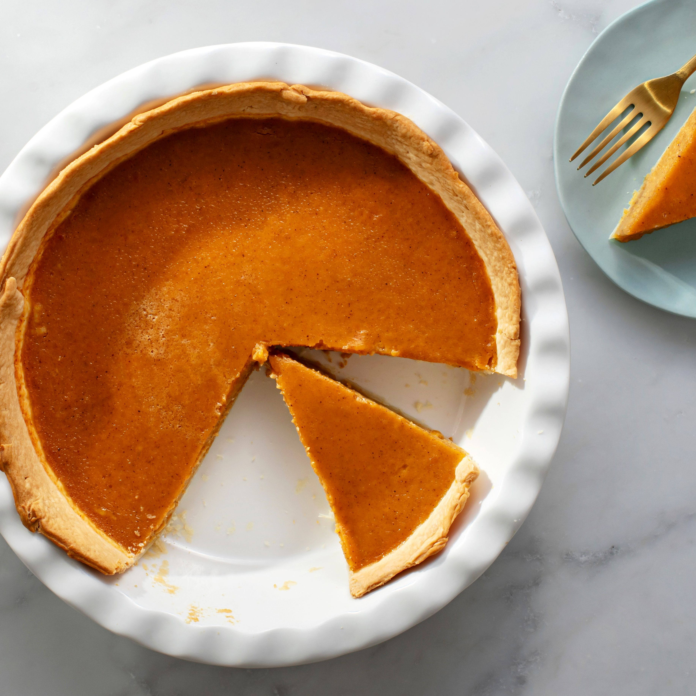

Introduction
This is my mother's pupkin pie recipe. The buttery crust and not too sweet filling give it a perfect balance.
It's a tasty crowd please dessert that's easy to make for the holiday season!

Ingredients
You will need
- 1 unbaked pie pastry sheet
- ¾ cup of sugar
- ½ teaspoon of salt
- 1 teaspoon of flour
- ¼ teaspoon of ground ginger
- 1 teaspoon of cinnamon
- ¼ teaspoon of nutmeg
- 1¼ cups of pupkin puree
- 2 eggs, lightly beaten
- 1 cup of evaporated milk
- 2 tablespoons of water
- ½ teaspoon of vanilla extract
Instructions
To make the pupkin pie...
- In a large bowl, combine all dry ingredients
- Add the beaten eggs; mix well
- Add in all the remaining wet ingredients and mix untill a smooth pie flling forms
- Pour the filling into your pastry-lined pie pan
- Bake the pie at 400°C for 15 minutes; reduce the teperature to 350°C
and bake for 35 minutes or until the center is set